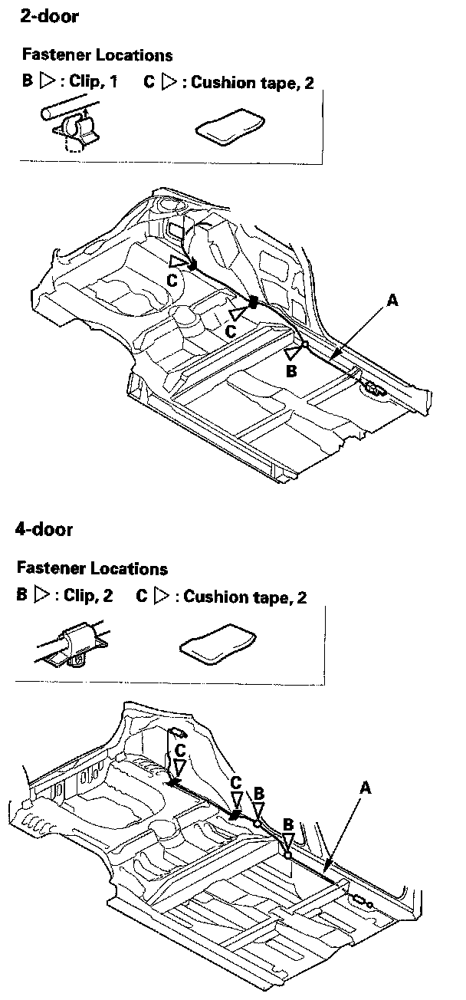
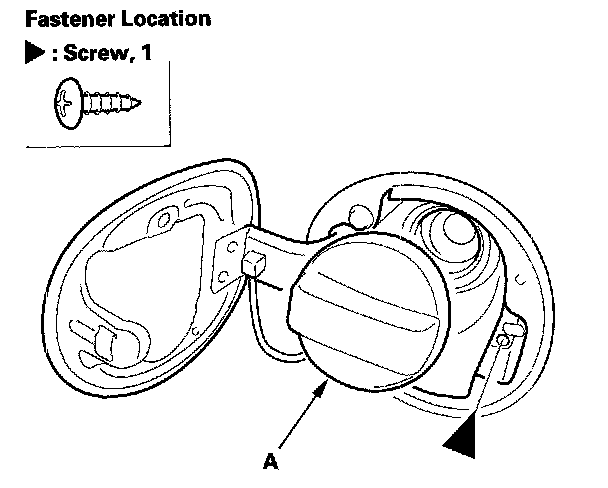
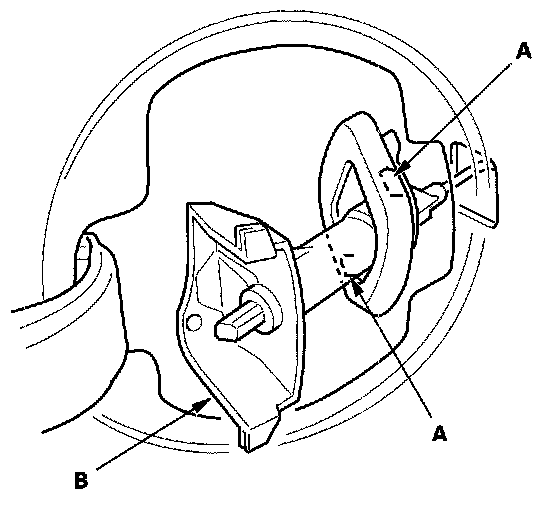
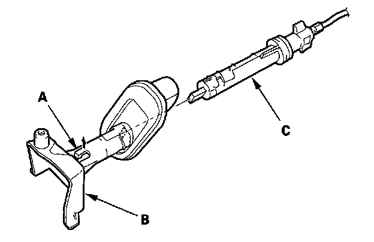
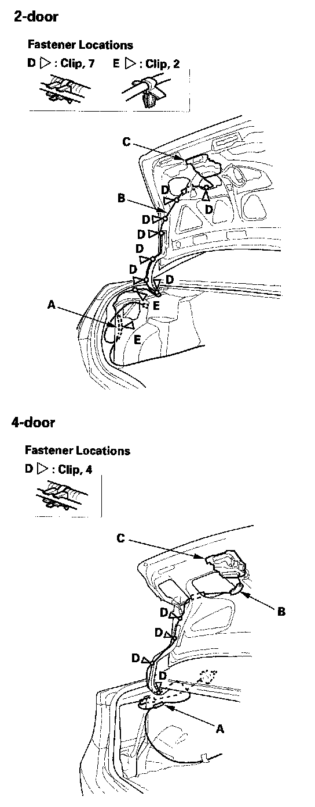
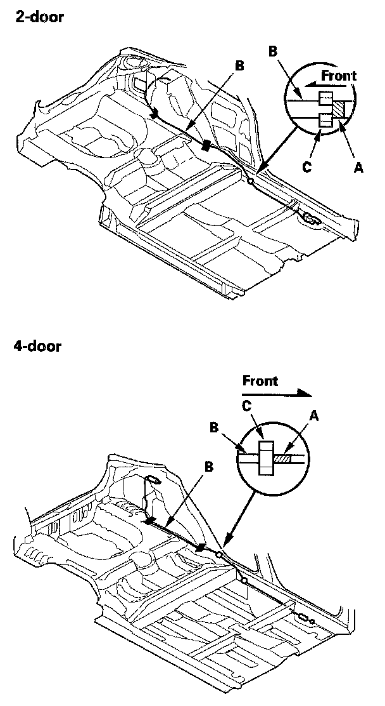
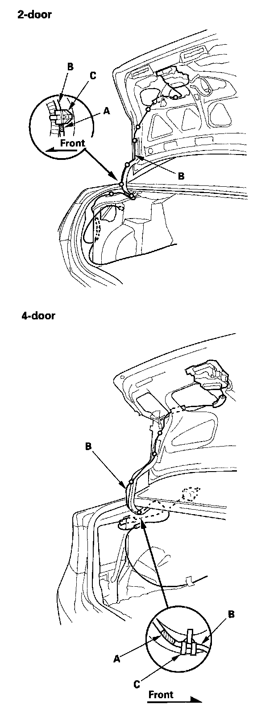

Trunk / Liftgate Latch Release Cable: Service and Repair
Trunk Lid Opener Cable/Fuel Fill Door Opener Cable ReplacementSRS components are located in this area. Review the SRS component locations, precautions and procedures before doing repairs or service.
NOTE:
- Put on gloves to protect your hands.
- Take care not to scratch the body and related parts.
1. Remove these items:
- Rear seat cushion
- Rear seat side bolster
- Front door sill trim, driver's
- Kick panels, driver's sides
- Rear door sill trim, both sides
- B-pillar lower trim
- Side trim panel
- Trunk side trim panel, left side
- Trunk lid trim (for some models)
- Trunk lid opener/fuel fill door opener
2. Pull the carpet back as needed.

3. Release the opener cable (A) from the clips (B). Remove the cushion tape (C).

4. Remove the screw. Remove the fuel cap (A) by turning it counterclockwise.

5. While pinching the hooks (A) from inside the vehicle, remove the grommet (B) from the body.

6. Release the hook (A), then remove the grommet (B) from the fuel fill door latch (C).
7. Remove the fuel fill door opener cable from inside the body.

8. Detach the opener cable junction box (A) from the body.
9. Disconnect the trunk lid opener cable (B) from the trunk lid latch (C).
10. Release the trunk lid opener/fuel fill door opener cable from the clips (D, E).
11. Remove the trunk lid opener/fuel fill door opener cable from the vehicle. Take care not to kink the cable.


12. Install the opener cable in the reverse order of removal, and note these items:
- Align the marks (A) on the opener cable (B) with the cable clips (C) as shown.
- Replace any damaged clips, and replace the cushion tape.